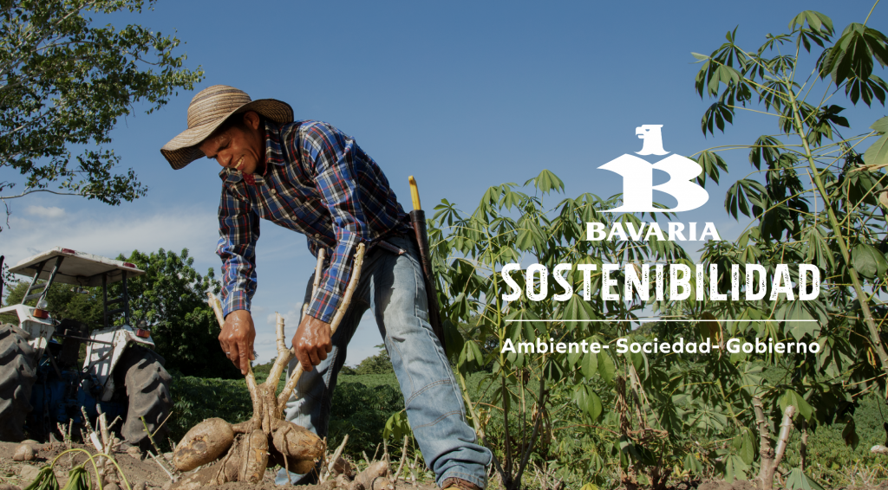
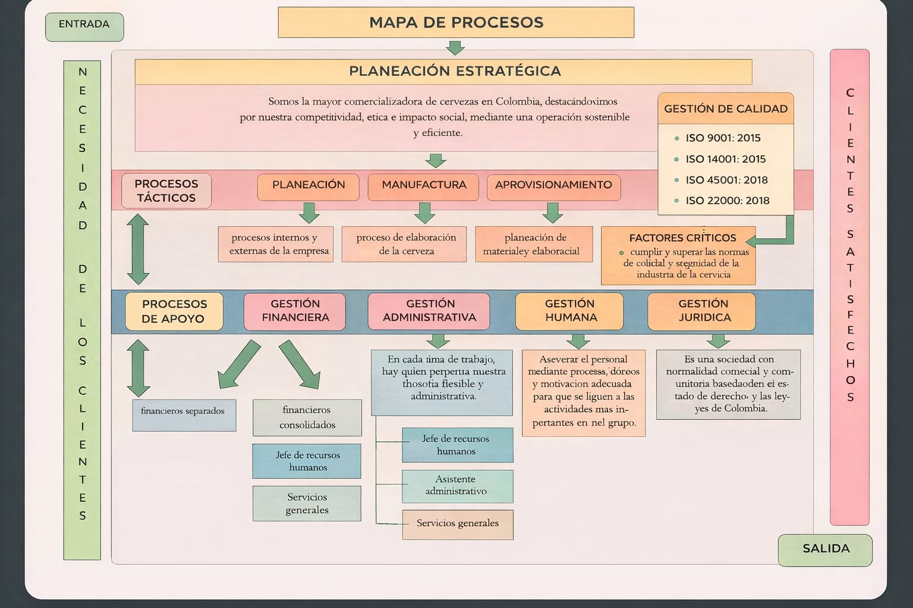
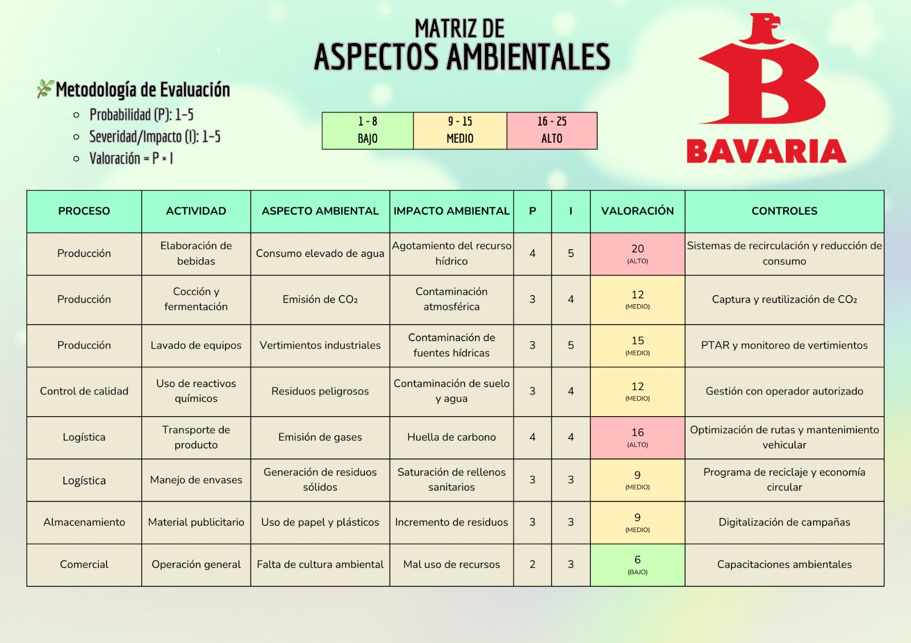
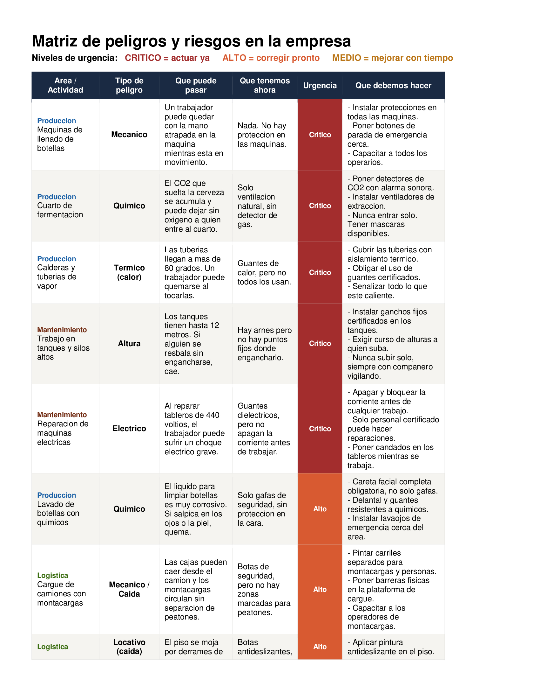
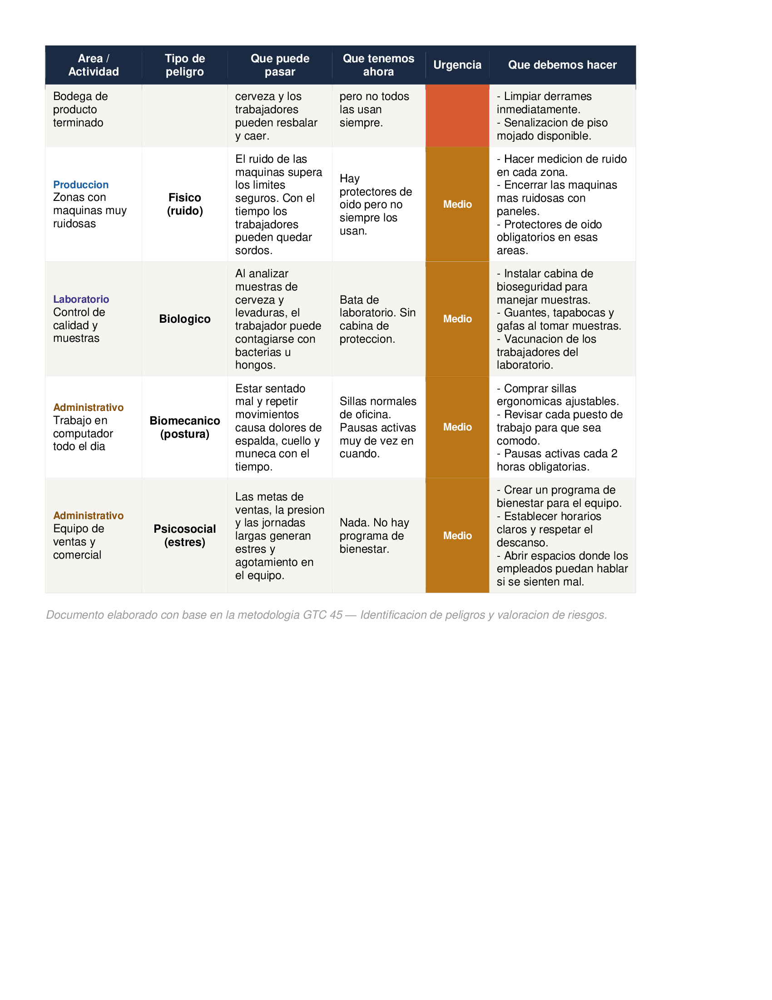
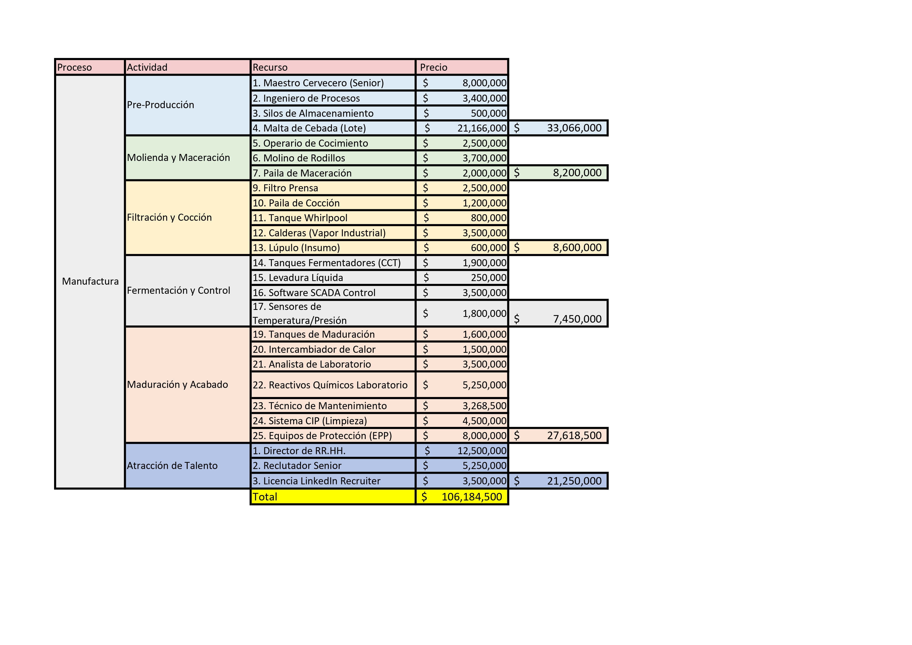
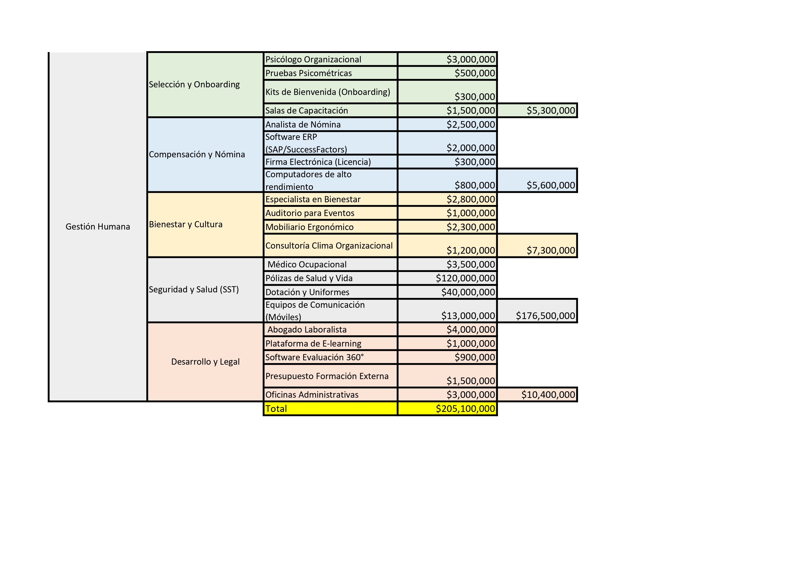

0
Procesos articulados en el mapa operativo
Sistema Integrado de Gestion
Analisis academico con enfoque corporativo sobre procesos, matriz de riesgos, gestion ambiental y estructura de responsabilidades.
0 lineas de gestion
0 focos criticos
0 frentes sostenibles

Vista ejecutiva del desempeño del sistema integrado de gestion con foco corporativo.
Procesos articulados en el mapa operativo
Cobertura estimada de controles de riesgo
Meta de eficiencia ambiental en recursos
Frentes de trabajo con roles RACI definidos
Bavaria es la cervecera más grande de Colombia, fundada en 1889, reconocida por su liderazgo en innovación, sostenibilidad y calidad. Forma parte del grupo AB InBev, con presencia nacional y exportaciones a mercados internacionales.
Desde su fundación en Bogotá, Bavaria ha impulsado el desarrollo industrial y social del país, consolidando marcas icónicas como Águila, Poker, Club Colombia y Pony Malta.
Objetivos alineados a la visión de Bavaria: excelencia operativa, sostenibilidad, innovación y responsabilidad social.
Garantizar procesos eficientes y de alta calidad, impulsando la productividad y la competitividad en el sector cervecero.
Reducir el impacto ambiental mediante el uso responsable de recursos, gestión del agua y reducción de emisiones.
Fomentar la innovación en productos, procesos y modelos de negocio para mantener el liderazgo en el mercado.
Promover el bienestar de colaboradores, comunidades y consumidores, apoyando iniciativas sociales y educativas.
Compromisos clave para una operación responsable y de largo plazo.
Proyectos orientados a optimizacion hidrica y eficiencia de consumo en planta.
Monitoreo de huella ambiental y transición progresiva a operaciones de menor impacto.
Fortalecimiento de reciclaje, reaprovechamiento y gestión responsable de residuos.
Vista general de la cadena de valor y su estructura funcional.

Tabla de roles y actividades del sistema de gestión.
Marco de evaluacion para anticipar eventos criticos y su severidad.

La matriz permite identificar, evaluar y priorizar riesgos para definir controles, asignar responsables y reducir la exposicion global de la organizacion.
Control de impactos con foco en eficiencia de recursos y cumplimiento regulatorio.

Estructura de gobernanza para una toma de decisiones clara y trazable.

Responsable
Aprobador
Consultado
Informado
Factores externos que condicionan la competitividad y sostenibilidad del negocio.

Regulaciones, impuestos y politicas sectoriales.
Inflacion, tasa de interes y demanda del mercado.
Cultura, habitos de consumo y tendencias demograficas.
Automatizacion, digitalizacion e innovacion operativa.
Sostenibilidad, eficiencia de recursos y cambio climatico.
Normativa laboral, cumplimiento y gobierno corporativo.





Hallazgos principales del Sistema Integrado de Gestion.